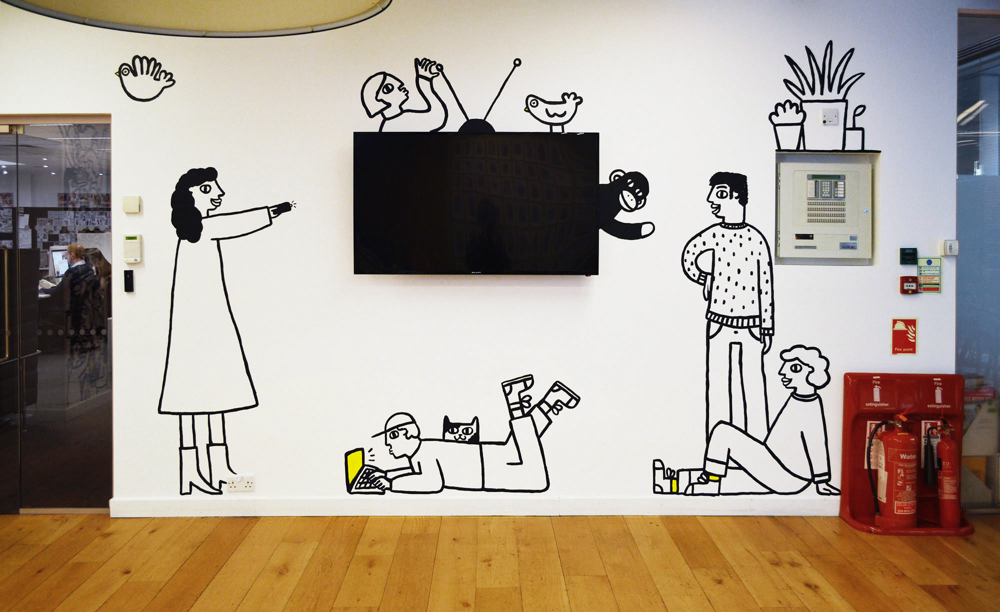
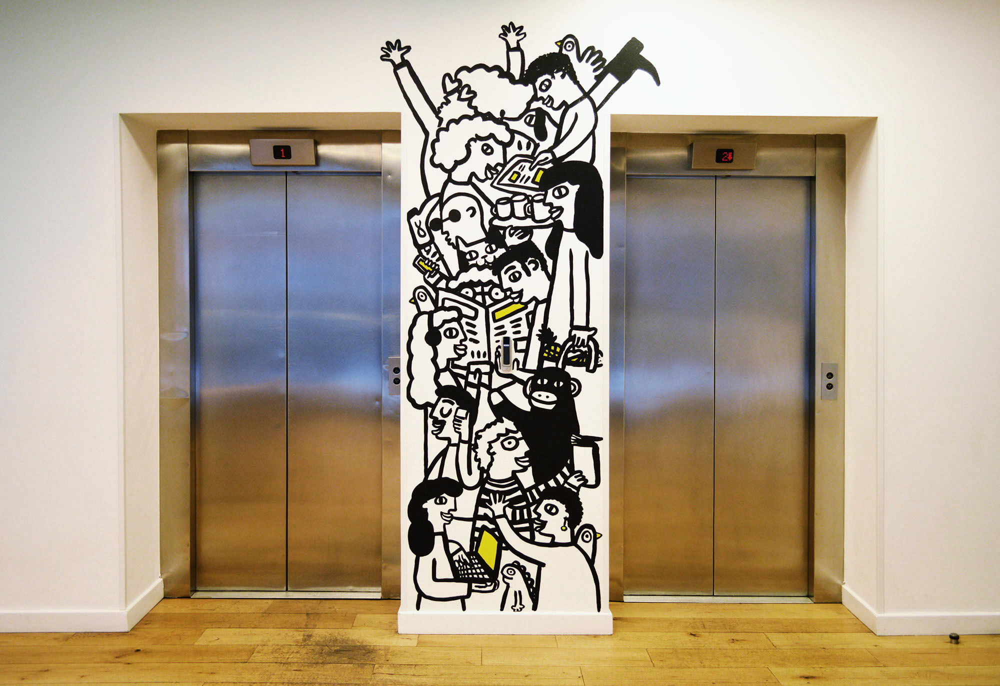
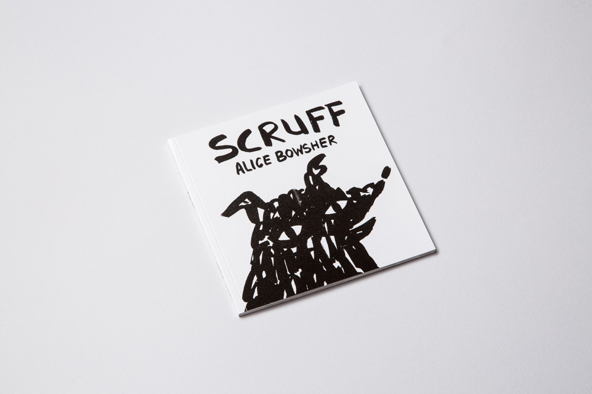
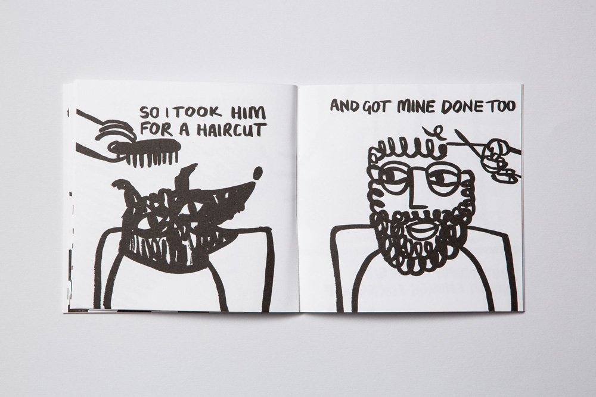

Interview with
Alice Bowsher
Alice Bowsher is a London-based illustrator known for her joyful characters, scenery and lettering, all drawn using her signature chunky black ink. Her simple yet warm and playful style has seen her bring personality to branding and murals for the likes of Childline, Camden Hells, Anna Money and Byron, and you might remember her brushwork adorning all the signage and merch for The Guardian at Glastonbury back in 2017. She is a dab hand at illustrating charismatic animals, particularly in her children’s books, such as Scruff, a book about a dog who looks just like his owner, and Curious, about the unpredictable relationship between a cat and its owner. As this week’s Midweek Mentor she talks about letting go and giving yourself head space to let ideas flow.
It’s Nice That: What top tips do you have to help people get creatively inspired today?
Alice Bowsher: I think the best thing to do is lose your inhibitions. I avoid looking at Instagram and others’ work when I’m beginning a project as I find it’s best to have a totally clear head. I get outside and exercise first thing in the morning before doing any drawing, and I believe it is best to just start drawing, finding that the majority of ideas come with that process without too much thinking.
It's Nice That: What’s the best advice you’ve ever received?
Alice Bowsher To make sure you’re making work for yourself rather than trying to please others. Also there’s a lot of good advice in the Beautiful Losers movie. If you’re feeling out of steam, this is a great watch.
 It's Nice That: What’s the first thing you do when you start a project?
Alice Bowsher: I try not to get too wrapped up worrying about coming up with amazing ideas straightaway and try to enjoy the process of exploration. It’s hard when you’re under time pressure but I can never come up with good ideas when I’m stressed and it really comes through in my work. So I try and give myself enough head space to experiment rather than thinking of the finished piece straight away.
It's Nice That: What did you want to do when you were a kid?
Alice Bowsher: I really wanted to be a pilot, or an aeroplane engineer but have always loved drawing and making things out of cardboard. Maybe one day I'll make a fully functioning cardboard aeroplane.
It's Nice That: What are you working on next? Anything else you want to share with our readers?
Alice Bowsher: I am currently working on a couple of non-fiction books for children and when those are all finished, I am hoping to make some time to work on my own projects, including the invites to my wedding!
 It's Nice That: How can people reach you or learn more about you?
Alice Bowsher: People can check my page Instagram account or through my personal website!
Thank you for reading, whoever you may be! Hope you are inspired just as I am!
Copyright © 2021, Middlesex University Dubai